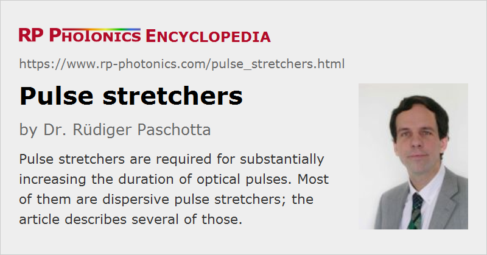

Pulse Stretchers
Definition: devices for temporally stretching ultrashort light pulses
Opposite term: pulse compressors
German: Pulsstrecker
How to cite the article; suggest additional literature
Author: Dr. Rüdiger Paschotta
There are various situations where one needs to increase the duration of an ultrashort pulse – often even by a large factor. Some examples:
- In a chirped-pulse amplification (CPA) system, the pulse duration within the optical amplifier needs to be increased in order to reduce the peak power, which would otherwise cause problems e.g. with nonlinear pulse distortion. In extreme cases, pulses with original durations of the order of 10 fs, for example, are stretched to durations of several nanoseconds.
- Strong pulse stretching can also be used for dispersive spectral analysis. The underlying principle is that different wavelength components are delayed in time by an amount which depends on the wavelength, so that one can derive the optical spectrum from a time-dependent signal obtained with a fast photodetector.
Some applications require tunable pulse durations, and those can be achieved with tunable pulse stretchers.
Dispersive and Non-dispersive Pulse Stretching
The pulse stretching is usually realized by applying a substantial amount of chromatic dispersion to the pulses. Essentially, that means a frequency-dependent optical group delay. For normal dispersion (positive group delay dispersion), the pulses acquire an up-chirp, where low-frequency components come first. In case of anomalous dispersion, one obtains a down-chirp. The output pulse duration is essentially determined by the spread of group delay within the bandwidth of the pulse. Therefore, femtosecond pulses require far less chromatic dispersion for stretching to a certain duration than picosecond pulses, which have a narrower bandwidth.
For long pulse durations – for example, nanoseconds or longer – dispersive pulse stretching is hardly practical, because huge amount of chromatic dispersion would be required. For such cases, alternative methods are available. For example, one can couple pulses into a optical resonator and exploit its round-trip time. However, the following of this article concentrates on dispersive pulse stretchers only.
When longer laser pulses are required, one can of course also optimize a laser to directly emit longer pulses. This can be done either by conventional design optimization or e.g. by inserting a nonlinear element into a Q-switched laser which delays the pulse build-up. For example, one may realize a nonlinear absorber based on frequency doubling or two-photon absorption. There are also devices with electronic pulse stretching, involving electronic feedback in an actively Q-switched laser.
Types of Dispersive Pulse Stretchers
Optical Fibers
In some cases, it is sufficient to send pulses through a long optical fiber, exploiting its group delay dispersion. Limitations can arise from the propagation losses and from the fiber nonlinearity, if the peak power is not already fairly low. Further, one has little control over the high-order dispersion; only to a limited extent, this can be tailored through the choice of fiber.
There may be problems related to depolarization, if the fiber is not polarization-maintaining. The polarization state may be restored with some polarization controller, but the polarization changes may somewhat depend on the wavelength and drift over time.
Prism Pairs
Dispersive prism pairs [1, 3] are quite common for dispersion compensation in mode-locked lasers, and can in principle also be used for pulse stretching. However, the possible amount of dispersion is fairly limited; therefore, other techniques are often preferred.
Diffraction Gratings
With a pair of diffraction gratings, one can generate a large amount of chromatic dispersion based on wavelength-dependent optical path lengths. The operation principle is similar to that of a prism pair, but diffraction gratings can produce much more angular dispersion, so that a much higher group delay dispersion of the grating pair is possible. Also, that principle works particularly well in large wavelength ranges.
With two gratings only, one always obtains anomalous dispersion (i.e., negative group delay dispersion). It is possible to obtain normal dispersion with a setup also containing a telescope, e.g. realized with one or two lenses [4]. One may, for example, use such a device as pulse stretcher and a simple grating pair as pulse compressor in a CPA system.
Unfortunately, dispersive grading pairs for very large stretching tend to be difficult to align. Imperfect alignment can result in complicated spatio-temporal distortions of the pulses.
Grism Pairs
It is possible to combine features of prisms and diffraction gratings in devices called grisms. With a pair of grisms, one can obtain anomalous dispersion in conjunction with a third-order dispersion which is opposite to that of a traditional grating pair [13].
Chirped Bragg Gratings
Strong temporal stretching of pulses within a short propagation length is possible with chirped Bragg gratings in the form of fiber Bragg gratings or volume Bragg gratings. The basic principle is that different wavelength components have a different penetration depth in the structure, therefore experiencing different group delays. This is a very simplified picture, however; the detailed calculations and design considerations are relatively sophisticated. For example, it can be difficult to avoid strong ripples of the group delay versus wavelength.
While fiber Bragg gratings may e.g. conveniently be inserted into a fiber amplifier system, volume Bragg gratings can handle much higher peak powers due to the much larger mode area.
In some cases, the same volume Bragg grating can be used for both stretching and compression – with the pulses hitting the grating from opposite ends.
Higher-order dispersion can be well controlled through the design of a chirped Bragg grating. For example, it may be tailored such that it fits well to the dispersion of a given pulse compressor in a CPA system.
The same principle can also be utilized with chirped dielectric mirrors. Here, however, the possible range of group delays is very limited due to the small penetration depth in such mirror structures.
Performance Figures of Pulse Stretchers
The performance of a pulse stretcher is not essentially characterized by the provided positive or negative group delay dispersion only. The following additional aspects can also be important:
- The range of achievable group delays is determined by the product of the group delay dispersion and the input pulse bandwidth. It therefore depends on the maximum applicable input pulse bandwidth, which may e.g. be limited by the reflection bandwidth of a chirped Bragg grating or by higher-order dispersion.
- Higher-order dispersion, or in other words a more complicated frequency dependence of the group delay (e.g. with group delay oscillations), can severely impact applications. For example, the later recompression of the pulse and the resulting pulse quality may be impaired, e.g. in the form of pedestals or satellite pulses. Refined designs have been developed to compensate several orders of dispersion; for example, see Refs. [10] and [11].
- In some cases, the insertion loss is relevant. For CPA systems, however, it is normally less important than for pulse compressors.
- Some types of pulse stretchers can handle only pulses with quite limited peak power, because otherwise one would obtain strong nonlinear pulse distortion.
Besides, pulse stretchers may also be selected based on their compactness, robustness and ease of alignment.
Suppliers
The RP Photonics Buyer's Guide contains 9 suppliers for pulse stretchers. Among them:
Questions and Comments from Users
Here you can submit questions and comments. As far as they get accepted by the author, they will appear above this paragraph together with the author’s answer. The author will decide on acceptance based on certain criteria. Essentially, the issue must be of sufficiently broad interest.
Please do not enter personal data here; we would otherwise delete it soon. (See also our privacy declaration.) If you wish to receive personal feedback or consultancy from the author, please contact him e.g. via e-mail.
By submitting the information, you give your consent to the potential publication of your inputs on our website according to our rules. (If you later retract your consent, we will delete those inputs.) As your inputs are first reviewed by the author, they may be published with some delay.
Bibliography
| [1] | O. E. Martínez et al., “Negative group-velocity dispersion using refraction”, J. Opt. Soc. Am. A 1 (10), 1003 (1984), doi:10.1364/JOSAA.1.001003 |
| [2] | D. Strickland and G. Mourou, “Compression of amplified chirped optical pulses”, Opt. Commun. 56, 219 (1985), doi:10.1016/0030-4018(85)90151-8 |
| [3] | R. L. Fork et al., “Negative dispersion using pairs of prisms”, Opt. Lett. 9 (5), 150 (1984), doi:10.1364/OL.9.000150 |
| [4] | O. E. Martinez, “3000 times grating compressor with positive group velocity dispersion: Application to fiber compensation in 1.3–1.6 μm region”, IEEE J. Quantum Electron. 23, 59 (1987), doi:10.1109/JQE.1987.1073201 |
| [5] | J. D. Kafka and T. Baer, “Prism-pair dispersive delay lines in optical pulse compression”, Opt. Lett. 12 (6), 401 (1987), doi:10.1364/OL.12.000401 |
| [6] | M. Pessot et al., “1000 times expansion/compression of optical pulses for chirped pulse amplification”, Opt. Commun. 62, 419 (1987), doi:10.1016/0030-4018(87)90011-3 |
| [7] | A. G. Kostenbauder, “Ray-pulse matrices: a rational treatment for dispersive optical systems”, IEEE J. Quantum Electron. 26, 1148 (1990), doi:10.1109/3.108113 |
| [8] | G. Vaillancourt et al., “Operation of a 1-kHz pulse-pumped Ti:sapphire regenerative amplifier”, Opt. Lett. 15 (6), 317 (1990), doi:10.1364/OL.15.000317 |
| [9] | S. Sauteret et al., “Generation of 20-TW pulses of picosecond duration using chirped-pulse amplification in a Nd:glass power chain”, Opt. Lett. 16 (4), 238 (1991), doi:10.1364/OL.16.000238 |
| [10] | B. E. Lemoff and C. P. J. Barty, “Quintic-phase-limited, spatially uniform expansion and recompression of ultrashort optical pulses”, Opt. Lett. 18 (19), 1651 (1993), doi:10.1364/OL.18.001651 |
| [11] | W. E. White et al., “Compensation of higher-order frequency-dependent phase terms in chirped-pulse amplification systems”, Opt. Lett. 18 (16), 1343 (1993), doi:10.1364/OL.18.001343 |
| [12] | M. Lai, S. T. Lai and C. Swinger, “Single-grating laser pulse stretcher and compressor”, Appl. Opt. 33 (30), 6985 (1994), doi:10.1364/AO.33.006985 |
| [13] | S. Kane and J. Squier, “Grism-pair stretcher-compressor system for simultaneous second- and third-order dispersion compensation in chirped-pulse amplification”, J. Opt. Soc. Am. B 14 (3), 661 (1997), doi:10.1364/JOSAB.14.000661 |
| [14] | J. Jiang, Z. Zhang and T. Hasama, “Evaluation of chirped-pulse-amplification systems with Offner triplet telescope stretchers”, J. Opt. Soc. Am. B 19 (4), 678 (2002), doi:10.1364/JOSAB.19.000678 |
| [15] | K.-H. Liao, “Large-aperture chirped volume Bragg grating based fiber CPA system”, Opt. Express 15 (8), 4876 (2007), doi:10.1364/OE.15.004876 |
| [16] | L. G. Li et al., “Distortionless large-ratio stretcher for ultra-short pulses using photonic crystal fiber”, Opt. Express 18 (12), 12341 (2010), doi:10.1364/OE.18.012341 |
| [17] | M. Y. Shverdin et al., “Chirped-pulse amplification with narrowband pulses”, Opt. Lett. 35 (14), 2478 (2010), doi:10.1364/OL.35.002478 |
See also: pulse compression, chromatic dispersion, chirped-pulse amplification, ultrashort pulses, pulse duration, optical delay lines
and other articles in the category light pulses
|  |
If you like this page, please share the link with your friends and colleagues, e.g. via social media:
These sharing buttons are implemented in a privacy-friendly way!